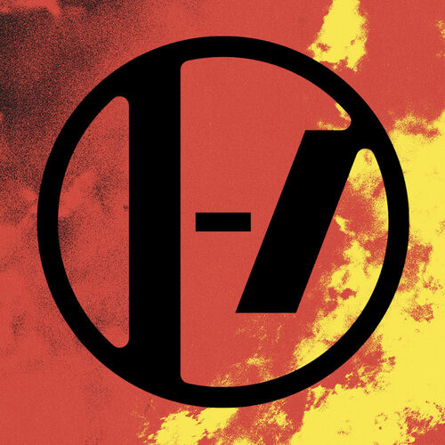

| Canción | Album | Audio |
|---|---|---|
| Paladin strait | ||
| Good Day |  |
|
| Morph |

La banda se formó en 2009 por el vocalista Tyler Joseph junto con Nick Thomas y Chris Salih, quienes la abandonaron en 2011. Desde su partida, la formación ha consistido en el cantante Tyler Joseph y el baterista Josh Dun.
¿Cuál es el significado del nombre de Twenty One Pilots? Procede de una obra de teatro Arthur Miller, en la que un corrupto contratista militar fabrica unos aviones con piezas defectuosas, siendo consciente de que eso pondrá en peligro a sus tripulantes. Como resultado, mueren veintiún pilotos.